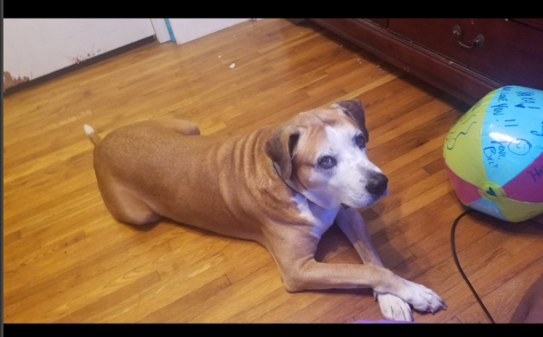

Hello, world! My name is Iyana.
This webpage is all about me. My likes, dislikes, hopes, dreams, and favorite things.
Biography
I am a sophomore at Cox Mill high school, I am an athlete, an artist, and a sister. I play golf as my main sport but I love playing volleyball as a side sport during the off season. I love doing girl scouts and drawing people or doing fanart of my favorite shows. I also love weight training.
In my spare time, I like to draw, play sports, and do girl scout and/or community service related projects. One day I would love to get a job working for the LPGA.
My Favorite Quotation
"Out of suffering have emerged the strongest souls. The most massive characters are seared with scars." - Kahlil Gibran
My Favorite Foods
- Pasta
- Chicken
- Burgers
- Chicken and Rice Caserole
- Seafood
My Top Eight Favorite Avengers Movies, in order
- Black Panther
- Black Panther: Wakanda Forever
- Doctor Strange: Multiverse of Madness
- Spider-Man: Into the Spiderverse
- Blade Trilogy
- Captain Marvel
- Dark Pheonix
- Morbius
Countries I'd Like to Visit, and What I'd Like To Do
- Japan
- Anime
- Cherry Blossoms
- Eat Food
- Europe
- Learn more about my Family
- Eat Food
- Culture
- New Orleans
- Eat Food
- Culture
- Mardigra Parade
Other Favorite Things
| Favorite Flower | Dahlia | |
|---|---|---|
| Favorite Time of Day | Night |  |
| Favorite Drink | Sweet Tea | |
| Favorite Animal | Dog |  |
| Favorite Song | "The Boy In The Black Dress" by YUNGBLUD | |
| Favorite Color | Mint Green |  |
Contact Information
Email: smith@emailme.com
Phone: 123-345-7890